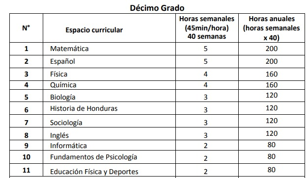
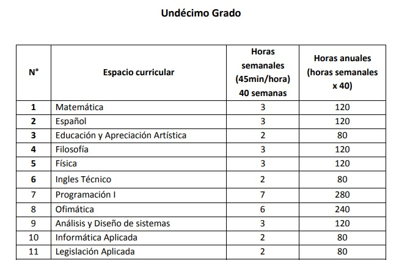
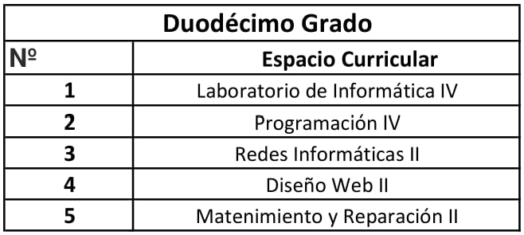
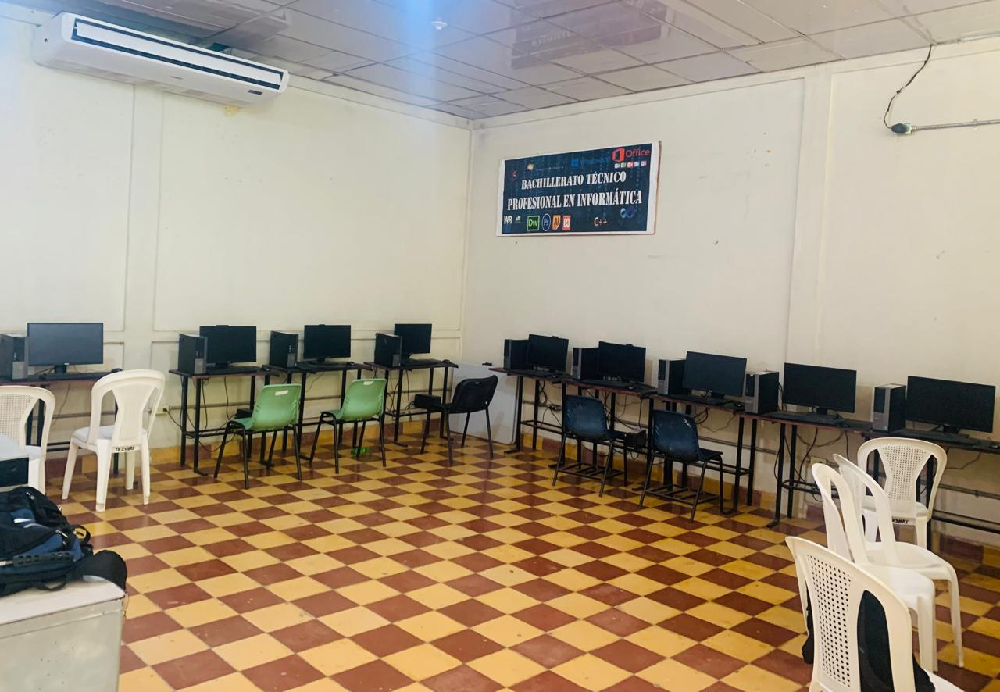

El Instituto Media Gubernamental Héctor Ramon Troches Tiene La siguiente Mision y vision:
Mision:
El Centro EducativoMedia Gubernamental "Hector Ramon Troches" es una entidad de caracter oficial, que ofrese una Educacion tecnica con calidad, basada en la resposabilidad, Liderazgo y honestidad buscando la formacon integral en sus educandos, como personas con calidad humana y academica.
vision:
A futuro ser una Institucion Educativa lider en la region sur del departamento de Santa Barbaraen el campo de formacion Profesional Tecnica, con una educacion de caracter integral para alumnos y alumnas, que de como resultado, personas compotentes para desempeñarse humana, profesional , academica y socialmente con efecacia y eficiencia en el trabajo y, responder a las necesidades de cualquier instituto, empresa o el estudio al continuarcon sus actividades academicas a nivel supeerior.
BACHILLERATO TECNICO PROFECIONAL EN INFORMATICA
Estudiar un bachillerato técnico en informática es una excelente opción si consideras que posees habilidades para el manejo de la computadora y quieres especializarte en este ámbito. Al elegir este camino académico te estarás enfocando en él desde tu educación media superior.
CLASES QUE RECIBE DECIMO GRADO.

CLASES QUE RECIBE UNDECIMO GRADO.

CLASES QUE RECIBE DUODECIMO GRADO.

LABORATORIO DE INFORMATICA.
